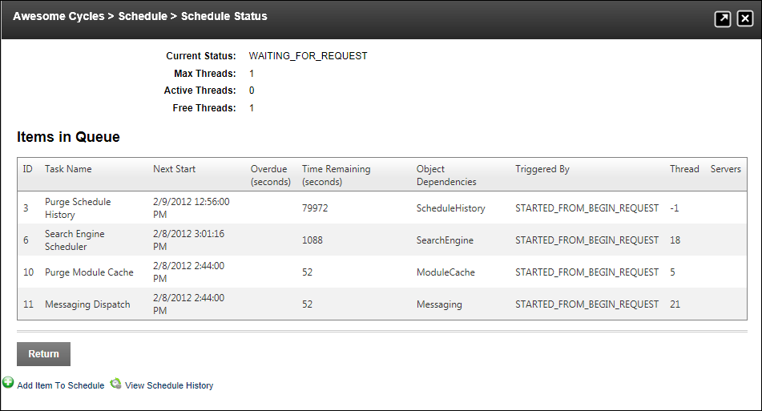

Viewing Schedule Status
How to view details of the current status of scheduled tasks and view details of each task currently in the schedule queue using the Schedule module.
- Navigate to Host > Advanced Settings >
 Schedule.
Schedule.
- Click the View Schedule Status button. This displays the following details at the top of the module:
- Current Status: Details the number of current threads for scheduled events. E.g. Waiting for request
- Maximum Threads: The maximum number of threads permitted at any time.
- Active Threads: The number of threads currently active.
- Free Threads: The number of threads free to be active.
- In the Items in Queue section, the following information is listed in the table:
- ID: The task identifier.
- Task Name: The name of the scheduled task.
- Next Start: Displays the date and time when the task is next scheduled.
- Overdue (seconds): When a task fails, the number of seconds that the task is overdue is displayed here.
- Time Remaining (seconds): Displays the remaining time in second until the task is next run.
- Object Dependencies: Lists the object which the task is reliant upon.
- Triggered By: Describes what triggers the event.
- Thread: A thread is a separate line of execution inside a process. Multiple threads can be used when a program is doing a complex and long calculation that can be broken into more than one execution paths.
- Servers: Lists the servers for the task.
- Click the Return link to return to the module.
